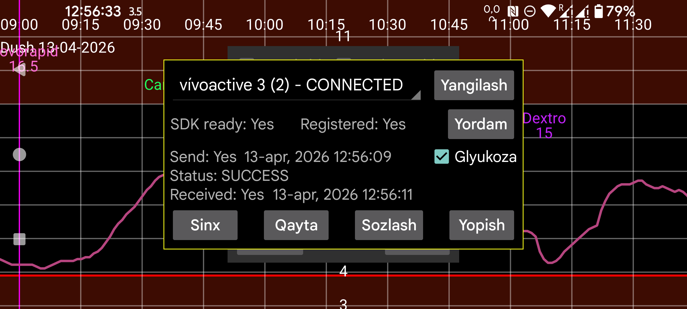

Kerfstok — Garmin uchinchi tomon ilovalarini qo‘llab-quvvatlaydigan sport soatlari uchun mo‘ljallangan ilova:
Garmin Connect IQ
Kerfstok haqida
1.6.0 versiyadan boshlab sensorli ekran bo‘lmagan soatlarda ham ishlaydi.
Kerfstok quyidagi vazifalarni bajaradi:
Bu soat ilovasi Juggluco bilan Bluetooth orqali ulanib, miqdorlarni almashadi va joriy glyukozani uzluksiz ko‘rsatadi.
Avvalo soat nomi CONNECTED deb ko‘rinishi kerak. Agar yo‘q bo‘lsa, muammoni Garmin Connect ilovasida hal qiling. Ikkinchidan, Kerfstok soatda ishga tushirilgan bo‘lishi kerak.
Ba’zan soat bilan telefon orasidagi ulanish uzilib qoladi.
Agar Yuborish holati = FAILURE_DURING_TRANSFER bo‘lsa, quyidagilardan birini yoki bir nechtasini sinab ko‘ring:
Boshqa muammolarda Garmin Connect ilovasini force stop qilib, qayta ochib, so‘ng Qayta ni bosish foydali bo‘lishi mumkin.
Agar ulanish to‘g‘ri bo‘lsa, lekin noma’lum sababga ko‘ra telefon va soatdagi miqdorlar sinxron bo‘lmasa, Sinx ni bosing. Bu har ikki tomon hali yubormagan miqdorlarni bir-biriga yuborishga urinadi.
Ba’zan Yuborish navbati tugmasi ko‘rinadi; bu soatga hali yuborilmagan xabarlar borligini bildiradi. Odatda ular avtomatik yuboriladi, lekin ba’zan jarayon to‘xtab qoladi va shu tugma yuborishni davom ettiradi. Ammo asosiy muammo ulanishda bo‘lsa, buning foydasi kam bo‘ladi. Faol uzatish paytida Yuborish navbati ni bosish ulanishni buzishi ham mumkin.
Ba’zan Yuborish navbati ko‘rinayotgan paytda ma’lumot faqat telefondan soatga ketadi, teskarisi esa ishlamaydi. Buni Qabul qilish va Yuborish yonidagi vaqtlarni solishtirib bilish mumkin: Qabul qilish vaqti Yuborish vaqtidan eskiroq bo‘lsa, muammo bor. Uni tuzatish uchun yana quyidagilardan birini yoki bir nechtasini bir necha bor sinab ko‘ring:
Ba’zan yuqoridagilar yordam bermasa, Garmin Connect ni qayta o‘rnatish yoki uning App info bo‘limida Storage ni tozalash va ilovani qayta ochish masalani hal qilishi mumkin. Garmin Connect ma’lumotni internet serverida saqlagani uchun, qayta o‘rnatilganda odatda ma’lumot yo‘qolmaydi.
Yangilash dialogni yangi ma’lumot bilan qayta chizadi, masalan Qayta yoki Sinx dan keyin.
Glyukoza ni belgilash glyukoza qiymatlari soatga yuborilishini belgilaydi.
Sozlash: qorong‘i rejim, qisqa yo‘llar va ID ni sozlaydi.
Ogohlantirish: Juggluco faqat bitta Kerfstok bilan ishlay oladi. Uni bir nechta soatdagi Kerfstok bilan yoki bir vaqtning o‘zida soat va velokompyuter bilan ulab bo‘lmaydi.